1、Spring概论 1.1 简介
2002年，首次推出了Spring框架的雏形：interface21 框架
Spring 框架即以interface21 框架为基础，经过重新设计，并且不断的丰富其内涵，于2004年3月24日，发布了1.0正式版本Rod Johnson ，Spring Framework创始人、著名作者。很难想象Rod Johnson的学历 , 他是悉尼大学的博士，然而他的专业不是计算机，而是音乐学。Spring 理念 : 使现有技术更加实用 . 本身就是一个大杂烩 , 整合现有的框架技术
早些年的框架
SSH ：Struct2 + Spring + Hibernate ！SSM ：SpringMVC + Spring + MyBatis ！
官网 : http://spring.io/
官方下载地址 : https://repo.spring.io/libs-release-local/org/springframework/spring/
GitHub : https://github.com/spring-projects
Spring Web MVC » [5.3.15]Maven仓库配置包
<dependency > <groupId > org.springframework</groupId > <artifactId > spring-webmvc</artifactId > <version > 5.3.15</version > </dependency >
1.2 优点
Spring是一个开源免费的框架（容器）
Spring是一个轻量级的框架 , 非侵入式的框架
控制反转 IOC , 面向切面编程 AOP 支持事务的处理 , 对框架整合的支持
一句话概括：Spring是一个轻量级的控制反转(IoC)和面向切面编程(AOP)的容器（框架）。
1.3 组成
在Spring的官网有个介绍：现代化的Java开发！说白了就是基于Spring的开发
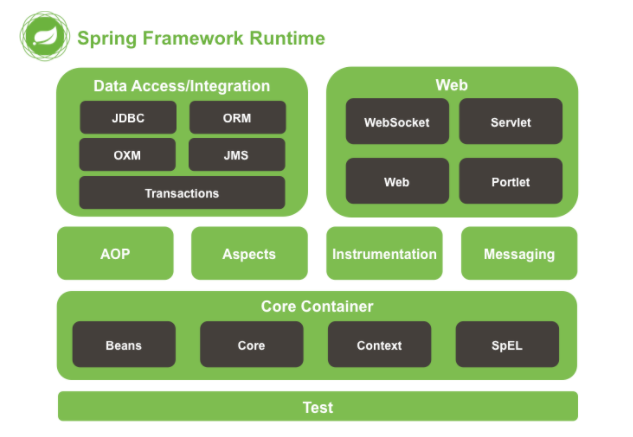
Spring 框架是一个分层架构，由 7 个定义良好的模块组成。Spring 模块构建在核心容器之上，核心容器定义了创建、配置和管理 bean 的方式 .
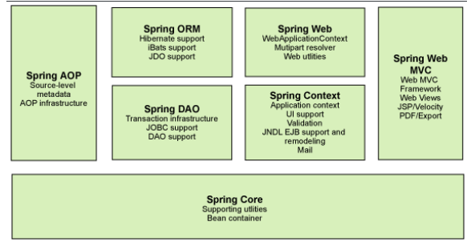
组成 Spring 框架的每个模块（或组件）都可以单独存在，或者与其他一个或多个模块联合实现。每个模块的功能如下：
核心容器 ：核心容器提供 Spring 框架的基本功能。核心容器的主要组件是 BeanFactory，它是工厂模式的实现。BeanFactory 使用控制反转 （IOC） 模式将应用程序的配置和依赖性规范与实际的应用程序代码分开。Spring 上下文 ：Spring 上下文是一个配置文件，向 Spring 框架提供上下文信息。Spring 上下文包括企业服务，例如 JNDI、EJB、电子邮件、国际化、校验和调度功能。Spring AOP ：通过配置管理特性，Spring AOP 模块直接将面向切面的编程功能 , 集成到了 Spring 框架中。所以，可以很容易地使 Spring 框架管理任何支持 AOP的对象。Spring AOP 模块为基于 Spring 的应用程序中的对象提供了事务管理服务。通过使用 Spring AOP，不用依赖组件，就可以将声明性事务管理集成到应用程序中。Spring DAO ：JDBC DAO 抽象层提供了有意义的异常层次结构，可用该结构来管理异常处理和不同数据库供应商抛出的错误消息。异常层次结构简化了错误处理，并且极大地降低了需要编写的异常代码数量（例如打开和关闭连接）。Spring DAO 的面向 JDBC 的异常遵从通用的 DAO 异常层次结构。Spring ORM ：Spring 框架插入了若干个 ORM 框架，从而提供了 ORM 的对象关系工具，其中包括 JDO、Hibernate 和 iBatis SQL Map。所有这些都遵从 Spring 的通用事务和 DAO 异常层次结构。Spring Web 模块 ：Web 上下文模块建立在应用程序上下文模块之上，为基于 Web 的应用程序提供了上下文。所以，Spring 框架支持与 Jakarta Struts 的集成。Web 模块还简化了处理多部分请求以及将请求参数绑定到域对象的工作。Spring MVC 框架 ：MVC 框架是一个全功能的构建 Web 应用程序的 MVC 实现。通过策略接口，MVC 框架变成为高度可配置的，MVC 容纳了大量视图技术，其中包括 JSP、Velocity、Tiles、iText 和 POI。
1.4 拓展 Spring Boot与Spring Cloud
Spring Boot 是 Spring 的一套快速配置脚手架，可以基于Spring Boot 快速开发单个微服务;
Spring Cloud是基于Spring Boot实现的；
Spring Boot专注于快速、方便集成的单个微服务个体，Spring Cloud关注全局的服务治理框架；
Spring Boot使用了约束优于配置的理念，很多集成方案已经帮你选择好了，能不配置就不配置 , Spring Cloud很大的一部分是基于Spring Boot来实现，Spring Boot可以离开Spring Cloud独立使用开发项目，但是Spring Cloud离不开Spring Boot，属于依赖的关系。
SpringBoot在SpringClound中起到了承上启下的作用，如果你要学习SpringCloud必须要学习SpringBoot。
要想学习好SpringBoot，必须学好SpringMVC和Spring
弊端：发展了太久之后，违背了原来的理念！配置十分繁琐，人称“配置地狱”！
2、IOC基础 2.1 IOC理论推导
UserDao 接口
1 2 3 public interface UserDao void getUser ()
UserDaoImpl 实现类
1 2 3 4 5 6 public class UserDaoImpl implements UserDao @Override public void getUser () "默认获取用户数据" );
1 2 3 4 5 6 public class UserDaoMySQLImpl implements UserDao @Override public void getUser () "MySQL获取用户数据" );
1 2 3 4 5 6 7 public class UserDaoOracleImpl implements UserDao @Override public void getUser () "Oracle获取用户数据" );
UserService 业务接口
1 2 3 public interface UserService void getUser ()
UserServiceImpl 业务实现类
1 2 3 4 5 6 7 public class UserServiceImpl implements UserService private UserDao userDao = new UserDaoImpl();@Override public void getUser ()
测试一下
1 2 3 4 5 @Test public void test () new UserServiceImpl();
如果我们需要改变用户的需求，就要在UserServiceImpl业务实现类中将private UserDao userDao = new UserDaoImpl();进行修改，但是实现类已经写死这个类为UserDaoImpl，如果需要修改就要改成new UserDaoMySQLImpl或者其它
在我们之前的业务中，用户的需求可能会影响我们原来的代码，我们需要根据用户的需求去修改原代码！如果程序代码量十分大，修改一次的成本代价十分昂贵！
我们使用一个Set接口实现，已经发生了革命性的变化！
1 2 3 4 5 6 7 8 9 10 11 12 13 14 15 public class UserServiceImpl implements UserService private UserDao userDao;public void setUserDao (UserDao userDao) this .userDao = userDao;@Override public void getUser ()
这样，我们再来测试方法就会变成
1 2 3 4 5 6 7 8 9 10 11 public class MyTest public static void main (String[] args) new UserServiceImpl();new UserDaoOracleImpl());
之前，程序是主动创建对象！控制权在程序员手中
使用了set注入之后，程序不再具有主动性，而是变成了被动的接收对象
这种思想，从本质上解决了问题，我们陈旭阳不用再去管理对象的创建。系统的耦合性大大降低，可以更加专注在业务上的实现！这是IOC的原型！
2.2 IOC本质 控制反转IOC(Inversion of Control)，是一种设计思想，DI(依赖注入)是实现IOC的一种方法 ，也有人认为DI只是IOC的另一种说法。没有IOC的程序中 , 我们使用面向对象编程 , 对象的创建与对象间的依赖关系完全硬编码在程序中，对象的创建由程序自己控制，控制反转后将对象的创建转移给第三方，个人认为所谓控制反转就是：获得依赖对象的方式反转了。
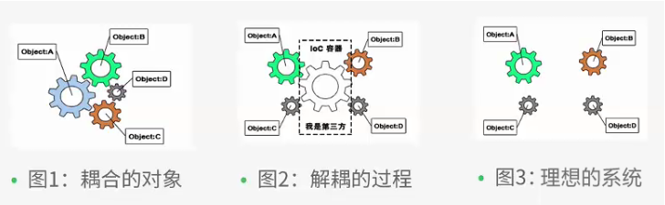IOC是Spring框架的核心内容 ，使用多种方式完美的实现了IOC，可以使用XML配置，也可以使用注解，新版本的Spring也可以零配置实现IOC。
Spring容器在初始化时先读取配置文件，根据配置文件或元数据创建与组织对象存入容器中，程序使用时再从IOC容器中取出需要的对象。
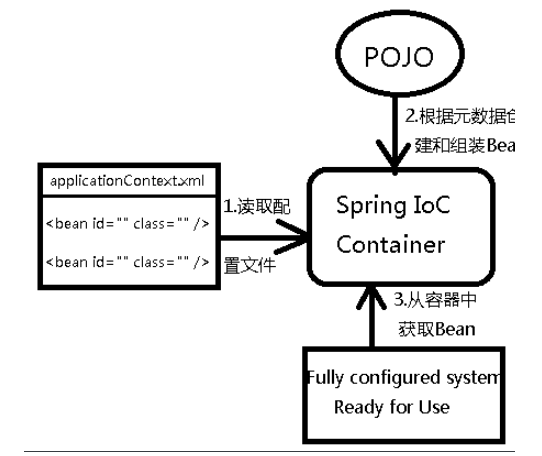
采用XML方式配置Bean的时候，Bean的定义信息是和实现分离的，而采用注解的方式可以把两者合为一体，Bean的定义信息直接以注解的形式定义在实现类中，从而达到了零配置的目的。
控制反转是一种通过描述（XML或注解）并通过第三方去生产或获取特定对象的方式。在Spring中实现控制反转的是IOC容器，其实现方法是依赖注入（Dependency Injection,DI）。
3、Hello Spring 3.1 导入Jar包 注 : spring 需要导入commons-logging进行日志记录 . 我们利用maven , 他会自动下载对应的依赖项 .
1 2 3 4 5 6 <dependency > <groupId > org.springframework</groupId > <artifactId > spring-webmvc</artifactId > <version > 5.3.15</version > </dependency >
3.2 编写代码
编写一个Hello实体类
1 2 3 4 5 6 7 8 9 10 11 12 13 14 15 16 17 18 public class hello private String str;public String getStr () return str;public void setStr (String str) this .str = str;@Override public String toString () return "hello{" +"str='" + str + '\'' +'}' ;
编写我们的spring文件 , 这里我们命名为beans.xml
1 2 3 4 5 6 7 8 9 10 11 12 13 <?xml version="1.0" encoding="UTF-8"?> <beans xmlns ="http://www.springframework.org/schema/beans" xmlns:xsi ="http://www.w3.org/2001/XMLSchema-instance" xsi:schemaLocation ="http://www.springframework.org/schema/beans https://www.springframework.org/schema/beans/spring-beans.xsd" ><bean id ="hello" class ="cn.edu.nyist.pojo.hello" > <property name ="str" value ="spring" /> </bean > </beans >
我们可以去进行测试了 .
1 2 3 4 5 6 7 8 9 10 11 12 13 public class MyTest public static void main (String[] args) new ClassPathXmlApplicationContext("beans.xml" );"hello" );
实际上程序就做了这样一件事情
1 2 3 4 5 6 7 8 9 类型 变量名 = new 类型()new hello()class new 的对象
1 2 3 <bean id ="hello" class ="cn.edu.nyist.pojo.hello" > <property name ="str" value ="spring" /> </bean >
3.3 思考
Hello 对象是谁创建的 ? 【 hello 对象是由Spring创建的 】
Hello 对象的属性是怎么设置的 ? 【hello 对象的属性是由Spring容器设置的 】
这个过程就叫控制反转 :
控制 : 谁来控制对象的创建 , 传统应用程序的对象是由程序本身控制创建的 , 使用Spring后 , 对象是由Spring来创建的
反转 : 程序本身不创建对象 , 而变成被动的接收对象 .
依赖注入 : 就是利用set方法来进行注入的.
IOC是一种编程思想，由主动的编程变成被动的接收
可以通过newClassPathXmlApplicationContext去浏览一下底层源码 .
3.4、修改案例一
此处的案例一就是在学习IOC基础时使用的一个案例
我们在案例一中， 新增一个Spring配置文件beans.xml
1 2 3 4 5 6 7 8 9 10 11 12 13 14 15 16 17 18 <?xml version="1.0" encoding="UTF-8"?> <beans xmlns ="http://www.springframework.org/schema/beans" xmlns:xsi ="http://www.w3.org/2001/XMLSchema-instance" xsi:schemaLocation ="http://www.springframework.org/schema/beans https://www.springframework.org/schema/beans/spring-beans.xsd" ><bean id ="MySQLImpl" class ="cn.edu.nyist.dao.UserDaoMySQLImpl" /> <bean id ="OracleImpl" class ="cn.edu.nyist.dao.UserDaoOracleImpl" /> <bean id ="UserServiceImpl" class ="cn.edu.nyist.service.UserServiceImpl" > <property name ="userDao" ref ="OracleImpl" /> </bean > </beans >
测试！
1 2 3 4 5 6 7 8 9 10 11 12 13 public static void main (String[] args) new ClassPathXmlApplicationContext("beans.xml" );"UserServiceImpl" );
OK , 到了现在 , 我们彻底不用再程序中去改动了 , 要实现不同的操作 , 只需要在xml配置文件中进行修改 , 所谓的IOC,一句话搞定 : 对象由Spring 来创建 , 管理 , 装配 !
4、IOC创建对象方式 4.1.通过无参构造方法来创建
User.java
1 2 3 4 5 6 7 8 9 10 11 12 13 14 15 16 17 public class User private String name;public User () public String getName () return name;public void setName (String name) this .name = name;public void show () "name：" + name);
beans.xml
1 2 3 4 5 6 7 8 9 10 11 12 <?xml version="1.0" encoding="UTF-8"?> <beans xmlns ="http://www.springframework.org/schema/beans" xmlns:xsi ="http://www.w3.org/2001/XMLSchema-instance" xsi:schemaLocation ="http://www.springframework.org/schema/beans https://www.springframework.org/schema/beans/spring-beans.xsd" ><bean id ="user" class ="cn.edu.nyist.pojo.User" > <property name ="name" value ="法外狂徒张三" /> </bean > </beans >
测试类
1 2 3 4 5 6 7 8 public class MyTest public static void main (String[] args) new ClassPathXmlApplicationContext("beans.xml" );"user" );
结果可以发现，在调用show方法之前，User对象已经通过无参构造初始化了！
4.2.通过有参构造方法来创建
User.java
1 2 3 4 5 6 7 8 9 10 11 12 13 14 15 16 17 18 19 public class User private String name;public User (String name) this .name = name;public String getName () return name;public void setName (String name) this .name = name;public void show () "name：" + name);
beans.xml 有三种方式编写
1 2 3 4 <!-- 第一种根据index参数下标设置 -->"user" class "cn.edu.nyist.pojo.User" >"0" value="法外狂徒张三" />
1 2 3 4 5 <!-- 第二种根据参数名字设置 -->"user" class "cn.edu.nyist.pojo.User" >"java.lang.String" value="法外狂徒张三" />
1 2 3 4 <!-- 第三种根据参数名设置 -->"user" class "cn.edu.nyist.pojo.User" >"name" value="法外狂徒张三" />
测试
1 2 3 4 5 6 7 8 public class MyTest public static void main (String[] args) new ClassPathXmlApplicationContext("beans.xml" );"user" );
结论：在配置文件加载的时候。其中管理的对象都已经初始化了！
5、Spring配置 5.1 别名 alias 设置别名 , 为bean设置别名 , 可以设置多个别名
1 2 <alias name ="user" alias ="userNew" />
起别名的时候，无论是之前的名字还是alias起别名之后的别名，都是可以正常使用的
5.2 Bean的配置 1 2 3 4 5 6 7 8 9 10 11 <bean id ="hello" name ="hello2 h2,h3;h4" class ="cn.edu.nyist.pojo.Hello" > <property name ="name" value ="Spring" /> </bean >
5.3 import import ，一般用于团队开发使用，可以将多个配置文件，导入合并为一个总的applicationContext.xml
1 <import resource ="{path}/beans.xml" />
6、依赖注入(DI)
依赖注入（Dependency Injection,DI）。
依赖 : 指Bean对象的创建依赖于容器 . Bean对象的依赖资源 。
注入 : 指Bean对象所依赖的资源 , 由容器来设置和装配 。
6.1 构造器注入 我们在之前的案例4已经详细讲过了
6.2 set注入 (重点) 要求被注入的属性 , 必须有set方法 , set方法的方法名由set + 属性首字母大写 , 如果属性是boolean类型 , 没有set方法 , 是 is 。
测试pojo类 :
Address.java
1 2 3 4 5 6 7 8 9 10 11 public class Address private String address;public String getAddress () return address;public void setAddress (String address) this .address = address;
Student.java
1 2 3 4 5 6 7 8 9 10 11 12 13 14 15 16 17 18 19 20 21 22 23 24 25 26 27 28 29 30 31 32 33 34 35 36 37 38 39 40 41 42 43 44 45 46 47 48 49 50 51 52 53 54 55 56 57 58 59 60 61 62 63 64 65 66 67 68 69 70 71 72 73 74 75 76 77 78 79 80 81 82 83 84 85 86 87 88 public class Student private String name;private Address address;private String[] books;private List<String> hobbys;private Map<String, String> card;private Set<String> games;private Properties info;private String wife;public String getName () return name;public void setName (String name) this .name = name;public Address getAddress () return address;public void setAddress (Address address) this .address = address;public String[] getBooks() {return books;public void setBooks (String[] books) this .books = books;public List<String> getHobbys () return hobbys;public void setHobbys (List<String> hobbys) this .hobbys = hobbys;public Map<String, String> getCard () return card;public void setCard (Map<String, String> card) this .card = card;public Set<String> getGames () return games;public void setGames (Set<String> games) this .games = games;public Properties getInfo () return info;public void setInfo (Properties info) this .info = info;public String getWife () return wife;public void setWife (String wife) this .wife = wife;@Override public String toString () return "Student{" +"name='" + name + '\'' +", address=" + address +", books=" + Arrays.toString(books) +", hobbys=" + hobbys +", card=" + card +", games=" + games +", info=" + info +", wife='" + wife + '\'' +'}' ;
1、常量注入
1 2 3 4 5 6 7 8 9 10 11 12 13 <?xml version="1.0" encoding="UTF-8"?> <beans xmlns ="http://www.springframework.org/schema/beans" xmlns:xsi ="http://www.w3.org/2001/XMLSchema-instance" xsi:schemaLocation ="http://www.springframework.org/schema/beans https://www.springframework.org/schema/beans/spring-beans.xsd" ><bean id ="student" class ="cn.edu.nyist.pojo.Student" > <property name ="name" value ="张三" /> </bean > </beans >
测试：
1 2 3 4 5 6 7 8 public class MyTest public static void main (String[] args) new ClassPathXmlApplicationContext("beans.xml" );"student" );
1、常量注入
1 2 3 4 <bean id ="student" class ="cn.edu.nyist.pojo.Student" > <property name ="name" value ="张三" /> </bean >
测试：
1 2 3 4 5 6 @Test public void test01 () new ClassPathXmlApplicationContext("beans.xml" ); "student" );
2、Bean注入
注意点：这里的值是一个引用，ref
1 2 3 4 5 6 7 8 9 <bean id ="address" class ="cn.edu.nyist.pojo.Address" > <property name ="address" value ="上海" /> </bean > <bean id ="student" class ="cn.edu.nyist.pojo.Student" > <property name ="name" value ="张三" /> <property name ="address" ref ="address" /> </bean >
3、数组注入
1 2 3 4 5 6 7 8 9 10 11 <bean id ="student" class ="cn.edu.nyist.pojo.Student" > <property name ="books" > <array > <value > 红楼梦</value > <value > 西游记</value > <value > 三国演义</value > <value > 水浒传</value > </array > </property > </bean >
4、List注入
1 2 3 4 5 6 7 8 9 10 <bean id ="student" class ="cn.edu.nyist.pojo.Student" > <property name ="hobbys" > <list > <value > 敲代码</value > <value > 看电影</value > <value > 听歌</value > </list > </property > </bean >
5、Map注入
1 2 3 4 5 6 7 8 9 <bean id ="student" class ="cn.edu.nyist.pojo.Student" > <property name ="card" > <map > <entry key ="身份证" value ="123456" /> <entry key ="银行卡" value ="654321" /> </map > </property > </bean >
6、set注入
1 2 3 4 5 6 7 8 9 10 <bean id ="student" class ="cn.edu.nyist.pojo.Student" > <property name ="games" > <set > <value > LOL</value > <value > CSGO</value > <value > CF</value > </set > </property > </bean >
7、Null注入
1 2 3 4 5 6 <bean id ="student" class ="cn.edu.nyist.pojo.Student" > <property name ="wife" > <null /> </property > </bean >
8、Properties注入
1 2 3 4 5 6 7 8 9 10 <bean id ="student" class ="cn.edu.nyist.pojo.Student" > <property name ="info" > <props > <prop key ="学号" > 2015105000</prop > <prop key ="性别" > 男</prop > <prop key ="姓名" > 张三三</prop > </props > </property > </bean >
测试结果：
1 2 3 4 5 6 7 8 9 10 11 12 13 14 15 16 17 18
6.3 拓展注入实现
我们可以使用P命名空间和C命名空间进行注入
User.java ： 【注意：这里没有有参构造器！】
1 2 3 4 5 6 7 8 9 10 11 12 13 14 15 16 17 18 19 20 21 22 23 24 25 26 27 28 public class User private String name;private int age;public String getName () return name;public void setName (String name) this .name = name;public int getAge () return age;public void setAge (int age) this .age = age;@Override public String toString () return "User{" +"name='" + name + '\'' +", age=" + age +'}' ;
1、P命名空间注入 : 需要在头文件中假如约束文件
1 2 3 4 5 6 7 8 9 10 11 12 <?xml version="1.0" encoding="UTF-8"?> <beans xmlns ="http://www.springframework.org/schema/beans" xmlns:xsi ="http://www.w3.org/2001/XMLSchema-instance" xmlns:p ="http://www.springframework.org/schema/p" xsi:schemaLocation ="http://www.springframework.org/schema/beans https://www.springframework.org/schema/beans/spring-beans.xsd" ><bean id ="user" class ="cn.edu.nyist.pojo.User" p:name ="张三" p:age ="18" /> </beans >
导入约束：xmlns:p="http://www.springframework.org/schema/p"
P(属性: properties)命名空间 , 属性依然要设置set方法
2、c 命名空间注入 : 需要在头文件中假如约束文件
1 2 3 4 5 6 7 8 9 10 11 <?xml version="1.0" encoding="UTF-8"?> <beans xmlns ="http://www.springframework.org/schema/beans" xmlns:xsi ="http://www.w3.org/2001/XMLSchema-instance" xmlns:c ="http://www.springframework.org/schema/c" xsi:schemaLocation ="http://www.springframework.org/schema/beans https://www.springframework.org/schema/beans/spring-beans.xsd" ><bean id ="user2" class ="cn.edu.nyist.pojo.User" c:age ="18" c:name ="张张张" /> </beans >
导入约束 : xmlns:c="http://www.springframework.org/schema/c"
C(构造: Constructor)命名空间 , 属性依然要设置set方法，并且需要写在pojo层有参构造方法的实现
在测试的时候会发现问题：爆红了，因为我们没有写有参构造！
1 2 3 4 5 6 7 public User () public User (String name, int age) this .name = name;this .age = age;
解决：把有参构造器加上，这里也能知道，c 就是所谓的构造器注入！
测试代码：
1 2 3 4 5 6 @Test public void testUser () new ClassPathXmlApplicationContext("userbean.xml" );"user2" );
注意点：P命名和C命名不能直接使用，需要导入xml约束，在官方文档有约束
xmlns:p="http://www.springframework.org/schema/p"
xmlns:c="http://www.springframework.org/schema/c"
6.4 Bean的作用域 在Spring中，那些组成应用程序的主体及由Spring IoC容器所管理的对象，被称之为bean。简单地讲，bean就是由IoC容器初始化、装配及管理的对象。
Scope
Description
singleton (Default) Scopes a single bean definition to a single object instance for each Spring IoC container.
prototype Scopes a single bean definition to any number of object instances.
request Scopes a single bean definition to the lifecycle of a single HTTP request. That is, each HTTP request has its own instance of a bean created off the back of a single bean definition. Only valid in the context of a web-aware Spring ApplicationContext.
session Scopes a single bean definition to the lifecycle of an HTTP Session. Only valid in the context of a web-aware Spring ApplicationContext.
application Scopes a single bean definition to the lifecycle of a ServletContext. Only valid in the context of a web-aware Spring ApplicationContext.
websocket Scopes a single bean definition to the lifecycle of a WebSocket. Only valid in the context of a web-aware Spring ApplicationContext.
singleton单例模式（Spring默认机制）
1 <bean id ="user" class ="cn.edu.nyist.pojo.User" p:name ="张三" p:age ="18" scope ="singleton" />
prototype原型模式：每次从容器中get的时候，都会产生一个新对象
1 <bean id ="user" class ="cn.edu.nyist.pojo.User" p:name ="张三" p:age ="18" scope ="prototype" />
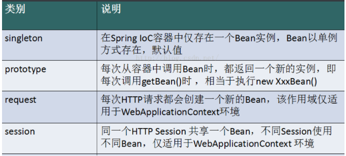
剩下的几种作用域中，request、session作用域仅在基于web的应用中使用（不必关心你所采用的是什么web应用框架），只能用在基于web的Spring ApplicationContext环境。
7、Bean的自动装配
自动装配是使用spring满足bean依赖的一种方法
spring会在应用上下文中为某个bean寻找其依赖的bean。
在Spring中有三种装配的方式
在xml中显式装配
在Java中显式装配
隐式的bean发现机制和自动装配。【重要】
7.1 测试环境搭建
新建一个项目
新建两个实体类，Cat Dog 都有一个叫的方法
Cat实体类
1 2 3 4 5 public class Cat public void shout () "喵~~~" );
Dog实体类
1 2 3 4 5 public class Dog public void shout () "汪~~~" );
People实体类
1 2 3 4 5 6 7 8 9 10 11 12 13 14 15 16 17 18 19 20 21 22 23 24 25 26 27 28 29 30 31 32 33 34 35 36 37 38 public class People private Cat cat;private Dog dog;private String name;@Override public String toString () return "People{" +"cat=" + cat +", dog=" + dog +", name='" + name + '\'' +'}' ;public Cat getCat () return cat;public void setCat (Cat cat) this .cat = cat;public Dog getDog () return dog;public void setDog (Dog dog) this .dog = dog;public String getName () return name;public void setName (String name) this .name = name;
编写Spring配置文件
1 2 3 4 5 6 7 8 9 10 11 12 13 14 15 16 17 18 <?xml version="1.0" encoding="UTF-8"?> <beans xmlns ="http://www.springframework.org/schema/beans" xmlns:xsi ="http://www.w3.org/2001/XMLSchema-instance" xsi:schemaLocation ="http://www.springframework.org/schema/beans https://www.springframework.org/schema/beans/spring-beans.xsd" ><bean id ="cat" class ="cn.edu.nyist.pojo.Cat" /> <bean id ="dog" class ="cn.edu.nyist.pojo.Dog" /> <bean id ="people" class ="cn.edu.nyist.pojo.People" > <property name ="name" value ="张三三" /> <property name ="cat" ref ="cat" /> <property name ="dog" ref ="dog" /> </bean > </beans >
编写测试类
1 2 3 4 5 6 7 8 9 10 public class MyTest @Test public void test () new ClassPathXmlApplicationContext("beans.xml" );"people" , People.class);
测试正常，程序没有问题
7.2 byName自动装配 由于在手动配置xml过程中，常常发生字母缺漏和大小写等错误，而无法对其进行检查，使得开发效率降低。
采用自动装配将避免这些错误，并且使配置简单化。
1 2 3 4 5 6 7 8 9 10 11 <bean id ="cat" class ="cn.edu.nyist.pojo.Cat" /> <bean id ="dog" class ="cn.edu.nyist.pojo.Dog" /> <bean id ="people" class ="cn.edu.nyist.pojo.People" autowire ="byName" > <property name ="name" value ="张三三" /> </bean >
假设将 cat 的代码第二行的bean id修改为 catXXX
再次测试， 执行时报空指针java.lang.NullPointerException。因为按byName规则找不对应set方法，真正的setCat就没执行，对象就没有初始化，所以调用时就会报空指针错误。
总结：
当一个bean节点带有autowire="byName"的属性时。
将查找其类中所有的set方法名，例如setCat，获得将set去掉并且首字母小写的字符串，即cat。
去spring容器中寻找是否有此字符串名称id的对象。
如果有，就取出注入；如果没有，就报空指针异常。
7.3 byType自动装配 使用autowire="byType"首先需要保证：同一类型的对象，在spring容器中唯一。如果不唯一，会报不唯一的异常。
1 NoUniqueBeanDefinitionException
1 2 3 4 5 6 7 8 9 10 11 <bean id ="cat" class ="cn.edu.nyist.pojo.Cat" /> <bean id ="dog" class ="cn.edu.nyist.pojo.Dog" /> <bean id ="people" class ="cn.edu.nyist.pojo.People" autowire ="byType" > <property name ="name" value ="张三三" /> </bean >
如果再注册一个cat 的bean对象！
1 2 3 4 5 6 7 8 9 10 11 12 13 14 <bean id ="cat" class ="cn.edu.nyist.pojo.Cat" /> <bean id ="cat111" class ="cn.edu.nyist.pojo.Cat" /> <bean id ="dog" class ="cn.edu.nyist.pojo.Dog" /> <bean id ="people" class ="cn.edu.nyist.pojo.People" autowire ="byType" > <property name ="name" value ="张三三" /> </bean >
测试，报错：NoUniqueBeanDefinitionException
删掉cat111，将cat的bean名称改掉！测试！因为是按类型装配，所以并不会报异常，也不影响最后的结果。甚至将id属性去掉，也不影响结果。
这就是按照类型自动装配！
7.4 使用注解
JDK1.5开始支持注解，Spring2.5开始全面支持注解
要使用注解需要注意
导入约束：context约束
配置注解的支持：<context:annotation-config/>
1 2 3 4 5 6 7 8 9 10 11 12 <?xml version="1.0" encoding="UTF-8"?> <beans xmlns ="http://www.springframework.org/schema/beans" xmlns:xsi ="http://www.w3.org/2001/XMLSchema-instance" xmlns:context ="http://www.springframework.org/schema/context" xsi:schemaLocation ="http://www.springframework.org/schema/beans https://www.springframework.org/schema/beans/spring-beans.xsd http://www.springframework.org/schema/context https://www.springframework.org/schema/context/spring-context.xsd" ><context:annotation-config /> </beans >
@Autowired
@Autowired 是按类型自动转配的，不支持id匹配。需要导入 spring-aop的包！
直接在属性上使用即可，也可以在set方式上使用
使用Autowired，我们可以不用编写set方法，前提是自动装配的属性在IOC（Spring）容器中存在，并且符合byname
测试：
将People类中的set方法去掉，使用@Autowired注解
1 2 3 4 5 6 7 8 9 10 11 12 13 14 15 16 17 18 19 20 21 22 23 24 25 26 27 28 29 public class People @Autowired private Cat cat;@Autowired private Dog dog;private String name;@Override public String toString () return "People{" +"cat=" + cat +", dog=" + dog +", name='" + name + '\'' +'}' ;public Cat getCat () return cat;public Dog getDog () return dog;public String getName () return name;
此时配置文件内容
1 2 3 4 5 6 7 8 9 10 11 12 13 14 15 16 17 18 19 <?xml version="1.0" encoding="UTF-8"?> <beans xmlns ="http://www.springframework.org/schema/beans" xmlns:xsi ="http://www.w3.org/2001/XMLSchema-instance" xmlns:context ="http://www.springframework.org/schema/context" xsi:schemaLocation ="http://www.springframework.org/schema/beans https://www.springframework.org/schema/beans/spring-beans.xsd http://www.springframework.org/schema/context https://www.springframework.org/schema/context/spring-context.xsd" ><context:annotation-config /> <bean id ="cat" class ="cn.edu.nyist.pojo.Cat" /> <bean id ="dog" class ="cn.edu.nyist.pojo.Dog" /> <bean id ="people" class ="cn.edu.nyist.pojo.People" /> </beans >
在查看了@Autowired的方法实现中，有这样几行代码
1 2 3 public @interface Autowired {boolean required () default true
通过了解为@Autowired(required=false) 说明： false，对象可以为null；true，对象必须存对象，不能为null。
@Qualifier
@Autowired是根据类型自动装配的，加上@Qualifier则可以根据byName的方式自动装配
@Qualifier不能单独使用。
测试实验步骤：
配置文件修改内容，保证类型存在对象。且名字不为类的默认名字！
1 2 3 4 5 6 7 8 9 10 11 12 13 14 15 16 17 18 19 20 21 <?xml version="1.0" encoding="UTF-8"?> <beans xmlns ="http://www.springframework.org/schema/beans" xmlns:xsi ="http://www.w3.org/2001/XMLSchema-instance" xmlns:context ="http://www.springframework.org/schema/context" xsi:schemaLocation ="http://www.springframework.org/schema/beans https://www.springframework.org/schema/beans/spring-beans.xsd http://www.springframework.org/schema/context https://www.springframework.org/schema/context/spring-context.xsd" ><context:annotation-config /> <bean id ="cat1" class ="cn.edu.nyist.pojo.Cat" /> <bean id ="cat2" class ="cn.edu.nyist.pojo.Cat" /> <bean id ="dog1" class ="cn.edu.nyist.pojo.Dog" /> <bean id ="dog2" class ="cn.edu.nyist.pojo.Dog" /> <bean id ="people" class ="cn.edu.nyist.pojo.People" /> </beans >
没有加Qualifier测试，直接报错
1 2 警告: Exception encountered during context initialization - cancelling refresh attempt: org.springframework.beans.factory.UnsatisfiedDependencyException: Error creating bean with name 'people' : Unsatisfied dependency expressed through field 'cat' ; nested exception is org.springframework.beans.factory.NoUniqueBeanDefinitionException: No qualifying bean of type 'cn.edu.nyist.pojo.Cat' available: expected single matching bean but found 2 : cat1,cat2
在属性上添加Qualifier注解
1 2 3 4 5 6 7 8 9 10 11 12 13 14 15 16 17 18 19 20 21 22 23 24 25 26 27 28 29 30 public class People @Autowired @Qualifier(value = "cat1") private Cat cat;@Autowired @Qualifier(value = "dog1") private Dog dog;private String name;@Override public String toString () return "People{" +"cat=" + cat +", dog=" + dog +", name='" + name + '\'' +'}' ;public Cat getCat () return cat;public Dog getDog () return dog;public String getName () return name;
测试成功输出结果
如果使用@Autowired自动装配的环境比较复杂，自动装配无法通过一个注解（@Autowired）完成的时候。我们可以使用@Qualifier(value = "XXX")去配置@Autowired的使用，指定唯一的一个bean对象注入
@Resource
@Resource如有指定的name属性，先按该属性进行byName方式查找装配；
其次再进行默认的byName方式进行装配；
如果以上都不成功，则按byType的方式自动装配。
都不成功，则报异常。
People实体类
1 2 3 4 5 6 7 8 9 10 11 12 13 14 15 16 17 18 19 20 21 22 23 24 25 26 27 28 29 public class People @Resource private Cat cat;@Resource private Dog dog;private String name;@Override public String toString () return "People{" +"cat=" + cat +", dog=" + dog +", name='" + name + '\'' +'}' ;public Cat getCat () return cat;public Dog getDog () return dog;public String getName () return name;
beans.xml配置文件
1 2 3 4 5 6 7 8 9 10 11 12 13 14 15 16 17 18 19 <?xml version="1.0" encoding="UTF-8"?> <beans xmlns ="http://www.springframework.org/schema/beans" xmlns:xsi ="http://www.w3.org/2001/XMLSchema-instance" xmlns:context ="http://www.springframework.org/schema/context" xsi:schemaLocation ="http://www.springframework.org/schema/beans https://www.springframework.org/schema/beans/spring-beans.xsd http://www.springframework.org/schema/context https://www.springframework.org/schema/context/spring-context.xsd" ><context:annotation-config /> <bean id ="cat1" class ="cn.edu.nyist.pojo.Cat" /> <bean id ="dog1" class ="cn.edu.nyist.pojo.Dog" /> <bean id ="people" class ="cn.edu.nyist.pojo.People" /> </beans >
由于@Resource的特殊性，它的执行顺序是先进行byName查找，失败；再进行byType查找，成功。
并且@Resource也可以指定bean中的id，通过编写@Resource(name = "XXX")即可指定配置文件中的bean的id
@Autowired与@Resource异同：
@Autowired与@Resource都可以用来装配bean。都可以写在字段上，或写在setter方法上。@Autowired默认按类型装配（属于spring规范），默认情况下必须要求依赖对象必须存在，如果要允许null 值，可以设置它的required属性为false，如：@Autowired(required=false) ，如果我们想使用名称装配可以结合@Qualifier注解进行使用@Resource（属于J2EE复返），默认按照名称进行装配，名称可以通过name属性进行指定。如果没有指定name属性，当注解写在字段上时，默认取字段名进行按照名称查找，如果注解写在setter方法上默认取属性名进行装配。 当找不到与名称匹配的bean时才按照类型进行装配。但是需要注意的是，如果name属性一旦指定，就只会按照名称进行装配。
它们的作用相同都是用注解方式注入对象，但执行顺序不同。@Autowired先byType，@Resource先byName。
8、使用注解开发
在spring4之后，想要使用注解形式，必须得要引入aop的包
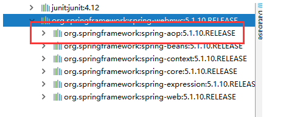
在配置文件当中，还得要引入一个context约束
1 2 3 4 5 6 7 8 9 10 11 <?xml version="1.0" encoding="UTF-8"?> <beans xmlns ="http://www.springframework.org/schema/beans" xmlns:xsi ="http://www.w3.org/2001/XMLSchema-instance" xmlns:context ="http://www.springframework.org/schema/context" xsi:schemaLocation ="http://www.springframework.org/schema/beans http://www.springframework.org/schema/beans/spring-beans.xsd http://www.springframework.org/schema/context http://www.springframework.org/schema/context/spring-context.xsd" ><context:annotation-config /> </beans >
8.1 Bean的实现 我们之前都是使用 bean 的标签进行bean注入，但是实际开发中，我们一般都会使用注解！
配置扫描哪些包下的注解
1 2 <context:component-scan base-package ="cn.edu.nyist.pojo" />
在指定包下编写类，增加注解
1 2 3 4 5 6 7 @Component public class User public String name = "张三三" ;
测试
1 2 3 4 5 6 7 public class MyTest public static void main (String[] args) new ClassPathXmlApplicationContext("ApplicationContext.xml" );"user" , User.class);
8.2 属性注入 使用注解注入属性
可以不用提供set方法，直接在直接名上添加@value(“值”)
1 2 3 4 5 6 7 8 9 @Component public class User @Value("张三三") public String name;
如果提供了set方法，在set方法上添加@value(“值”)
1 2 3 4 5 6 7 8 9 10 11 12 13 14 @Component public class User public String name;@Value("张三三") public void setName (String name) this .name = name;
8.3 衍生注解 我们这些注解，就是替代了在配置文件当中配置步骤而已！更加的方便快捷！
@Component三个衍生注解
为了更好的进行分层，Spring可以使用其它三个注解，功能一样，目前使用哪一个功能都一样。
写上这些注解，就相当于将这个类交给Spring管理装配了！
1 2 3 4 5 6 7 8 9 10 11 12 13 14 15 16 17 18 @Service public class UserService @Repository public class UserDao @Controller public class UserController
8.4 自动装配注解 在Bean的自动装配已经总结过，可以参考7、Bean的自动装配
8.5 作用域 @scope
singleton：默认的，Spring会采用单例模式创建这个对象。关闭工厂 ，所有的对象都会销毁。
prototype：多例模式。关闭工厂 ，所有的对象不会销毁。内部的垃圾回收机制会回收
1 2 3 4 5 6 @Controller("user") @Scope("prototype") public class User @Value("张三三") public String name;
8.6 小结 XML与注解比较
XML可以适用任何场景 ，结构清晰，维护方便
注解不是自己提供的类使用不了，开发简单方便，维护相对复杂
xml与注解整合开发 ：推荐最佳实践
xml管理Bean
注解完成属性注入
使用过程中， 只需要注意一个问题：必须要让注解生效，就需要开启注解的主持
1 2 3 <context:annotation-config /> <context:component-scan base-package ="cn.edu.nyist" />
作用：
进行注解驱动注册，从而使注解生效
用于激活那些已经在spring容器里注册过的bean上面的注解，也就是显示的向Spring注册
如果不扫描包，就需要手动配置bean
如果不加注解驱动，则注入的值为null！
8.7 基于Java类进行配置 JavaConfig 原来是 Spring 的一个子项目，它通过 Java 类的方式提供 Bean 的定义信息，在 Spring4 的版本， JavaConfig 已正式成为 Spring4 的核心功能 。
我们现在要完全不适用Spring的xml配置，全权交给Java来做
测试：
1 2 3 4 5 6 7 8 9 10 11 12 13 14 15 16 17 18 19 20 @Component public class User private String name;@Override public String toString () return "User{" +"name='" + name + '\'' +'}' ;public String getName () return name;@Value("张三三") public void setName (String name) this .name = name;
新建一个config配置包，编写一个ZConfig配置类
1 2 3 4 5 6 7 8 9 10 11 12 13 14 @Configuration @ComponentScan("cn.edu.nyist") public class ZConfig @Bean public User User () return new User();
1 2 3 4 5 6 7 8 public class MyTest public static void main (String[] args) new AnnotationConfigApplicationContext(ZConfig.class);"User" , User.class);
导入其他配置如何做呢？
我们再编写一个配置类！
1 2 3 @Configuration public class ZConfig2
在之前的配置类中我们来选择导入这个配置类
1 2 3 4 5 6 7 8 9 @Configuration @Import(ZConfig2.class) public class ZConfig @Bean public User User () return new User();
关于这种Java类的配置方式，在之后的SpringBoot 和 SpringCloud中还会大量看到，只需要知道这些注解的作用即可！
9、代理模式 为什么要学习代理模式，因为AOP的底层机制就是动态代理！
代理模式：
学习aop之前 , 我们要先了解一下代理模式！
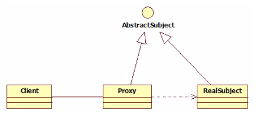
9.1 静态代理 静态代理角色分析
抽象角色 : 一般使用接口或者抽象类来实现
真实角色 : 被代理的角色
代理角色 : 代理真实角色 ; 代理真实角色后 , 一般会做一些附属的操作 .
客户 : 使用代理角色来进行一些操作 .
代码实现
1 2 3 4 public interface Rent public void rent ()
1 2 3 4 5 6 7 8 public class Host implements Rent @Override public void rent () "房东要出租房子" );
1 2 3 4 5 6 7 8 9 10 11 12 13 14 15 16 17 18 19 20 21 22 23 24 25 26 27 28 29 30 31 32 33 public class Proxy extends Host private Host host;public Proxy () public Proxy (Host host) this .host = host;public void rent () public void seeHouse () "中介带你看房子" );public void fare () "收中介费" );public void hetong () "签租赁合同" );
1 2 3 4 5 6 7 8 9 10 11 public class Client public static void main (String[] args) new Host();new Proxy(host);
分析： 在这个过程中，租客直接接触的就是中介，就如同现实生活中的样子，租客看不到房东，但是租客依旧租到了房东的房子通过代理，这就是所谓的代理模式，程序源自于生活，所以学编程的人，一般能够更加抽象的看待生活中发生的事情。
9.2 静态代理的好处
可以使得我们的真实角色更加纯粹 . 不再去关注一些公共的事情 .
公共的业务由代理来完成 . 实现了业务的分工 ,
公共业务发生扩展时变得更加集中和方便 .
缺点 :
类多了 , 多了代理类 , 工作量变大了 . 开发效率降低 .
我们想要静态代理的好处，又不想要静态代理的缺点，所以 , 就有了动态代理 !
9.3 静态代理再理解 练习步骤：
创建一个抽象角色，比如平时做的用户业务，抽象起来就是增删改查！
1 2 3 4 5 6 7 public interface UserService public void add () public void delete () public void update () public void query ()
1 2 3 4 5 6 7 8 9 10 11 12 13 14 15 16 17 18 19 20 21 22 23 public class UserServiceImpl implements UserService @Override public void add () "增加了一个用户" );@Override public void delete () "删除了一个用户" );@Override public void update () "修改了一个用户" );@Override public void query () "查询了一个用户" );
需求来了，现在我们需要增加一个日志功能，怎么实现！
思路1 ：在实现类上增加代码 【比较麻烦，要改变底层代码】
思路2：使用代理来做，能够不改变原来的业务情况下，实现此功能就是最好的了！
1 2 3 4 5 6 7 8 9 10 11 12 13 14 15 16 17 18 19 20 21 22 23 24 25 26 27 28 29 30 31 32 33 34 35 36 37 public class UserServiceProxy implements UserService public void setUserService (UserServiceImpl userService) this .userService = userService;@Override public void add () "add" );@Override public void delete () "delete" );@Override public void update () "update" );@Override public void query () "query" );public void log (String msg) "使用了" +msg+"方法" );
1 2 3 4 5 6 7 8 9 10 11 public class Client public static void main (String[] args) new UserServiceImpl();new UserServiceProxy();
我们在不改变原来的代码的情况下，实现了对原有功能的增强，这是AOP中最核心的思想
聊聊AOP：纵向开发，横向开发
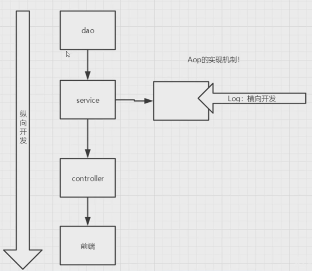
9.4 动态代理
动态代理的角色和静态代理的一样
动态代理的代理类是动态生成的 ，静态代理的代理类是我们提前写好的
动态代理分为两类 : 一类是基于接口动态代理 , 一类是基于类的动态代理
基于接口的动态代理——JDK动态代理
基于类的动态代理—cglib
现在用的比较多的是 javasist 来生成动态代理，可以百度一下javasist
我们这里使用JDK的原生代码来实现，其余的道理都是一样的！
JDK的动态代理需要了解两个类
核心 : InvocationHandler 和 Proxy ， 打开JDK帮助文档看看
【InvocationHandler：调用处理程序】
1 2 3 4 Object invoke (Object proxy, 方法 method, Object[] args) ；
【Proxy : 代理】
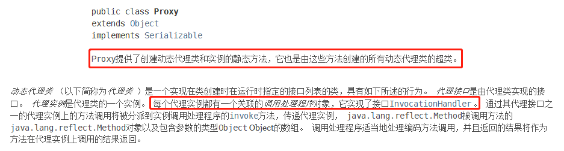
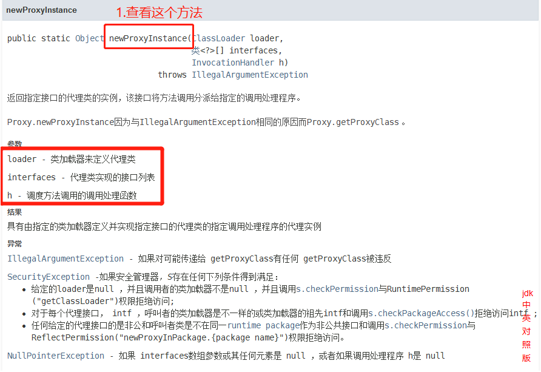
1 // 生成代理类public Object getProxy(){ return Proxy .newProxyInstance(this .getClass().getClassLoader(), rent.getClass().getInterfaces(),this );}
代码实现
抽象角色和真实角色和之前的一样！
1 2 3 4 public interface Rent public void rent ()
1 2 3 4 5 6 7 8 public class Host implements Rent @Override public void rent () "房东要出租房子" );
ProxyInvocationHandler. java 即代理角色
1 2 3 4 5 6 7 8 9 10 11 12 13 14 15 16 17 18 19 20 21 22 23 24 25 26 27 28 29 30 public class ProxyInvocationHandler implements InvocationHandler private Rent rent;public void setRent (Rent rent) this .rent = rent;public Object getProxy () return Proxy.newProxyInstance(this .getClass().getClassLoader(),this );@Override public Object invoke (Object proxy, Method method, Object[] args) throws Throwable return result;public void seeHouse () "带房客看房" );public void fare () "收中介费" );
1 2 3 4 5 6 7 8 9 10 11 12 public class Client public static void main (String[] args) new Host();new ProxyInvocationHandler();
核心：一个动态代理 , 一般代理某一类业务 , 一个动态代理可以代理多个类，代理的是接口！
9.5 深化理解 我们来使用动态代理实现代理我们后面写的UserService！
我们也可以编写一个通用的动态代理实现的类！所有的代理对象设置为Object即可！
1 2 3 4 5 6 7 8 9 10 11 12 13 14 15 16 17 18 19 20 21 22 23 24 25 26 27 28 public class ProxyInvocationHandler implements InvocationHandler private Object target;public void setTarget (Object target) this .target = target;public Object getProxy () return Proxy.newProxyInstance(this .getClass().getClassLoader(),this );@Override public Object invoke (Object proxy, Method method, Object[] args) throws Throwable return result;public void log (String msg) "使用了" +msg+"方法" );
Client实现类
1 2 3 4 5 6 7 8 9 10 11 12 13 14 15 16 17 18 public class Client public static void main (String[] args) new UserServiceImpl();new ProxyInvocationHandler();
9.6 动态代理的好处 静态代理有的它都有，静态代理没有的，它也有！
可以使得我们的真实角色更加纯粹 . 不再去关注一些公共的业务
公共的业务由代理来完成 . 实现了业务的分工
公共业务发生扩展时变得更加集中和方便
一个动态代理 , 一般代理某一类业务
一个动态代理可以代理多个类，代理的是接口！
10、AOP 10.1 什么是AOP AOP（Aspect Oriented Programming） 意为：面向切面编程，通过预编译方式和运行期动态代理实现程序功能的统一维护的一种技术。AOP是OOP的延续，是软件开发中的一个热点，也是Spring框架中的一个重要内容，是函数式编程的一种衍生范型。利用AOP可以对业务逻辑的各个部分进行隔离，从而使得业务逻辑各部分之间的耦合度降低，提高程序的可重用性，同时提高了开发的效率。
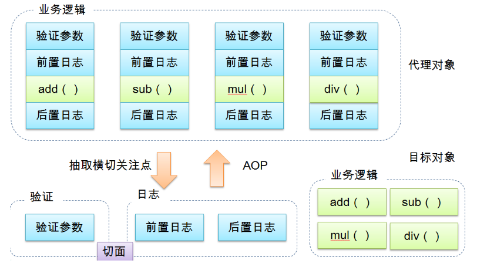
10.2 Aop在Spring中的作用 提供声明式事务；允许用户自定义切面
横切关注点：跨越应用程序多个模块的方法或功能。即是，与我们业务逻辑无关的，但是我们需要关注的部分，就是横切关注点。如日志 , 安全 , 缓存 , 事务等等 ….
切面（ASPECT）：横切关注点 被模块化 的特殊对象。即，它是一个类。
通知（Advice）：切面必须要完成的工作。即，它是类中的一个方法。
目标（Target）：被通知对象。
代理（Proxy）：向目标对象应用通知之后创建的对象。
切入点（PointCut）：切面通知 执行的 “地点”的定义。
连接点（JointPoint）：与切入点匹配的执行点。
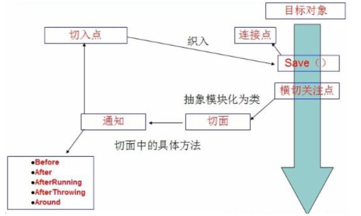
SpringAOP中，通过Advice定义横切逻辑，Spring中支持5种类型的Advice:
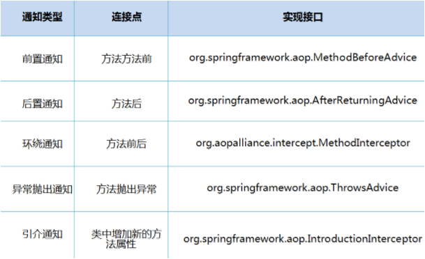
即 Aop 在 不改变原有代码的情况下 , 去增加新的功能
10.3 使用Spring实现Aop 【重点】使用AOP织入，需要导入一个依赖包！
1 2 3 4 5 6 7 <dependency > <groupId > org.aspectj</groupId > <artifactId > aspectjweaver</artifactId > <version > 1.9.7</version > </dependency >
第一种方式
通过 Spring API 实现
1 2 3 4 5 6 7 8 public interface UserService public void add () public void delete () public void update () public void select ()
1 2 3 4 5 6 7 8 9 10 11 12 13 14 15 16 17 18 19 20 21 22 public class UserServiceImpl implements UserService @Override public void add () "增加了一个用户" );@Override public void delete () "删除了一个用户" );@Override public void update () "更新了一个用户" );@Override public void select () "查询了一个用户" );
然后去写我们的增强类 , 编写两个 , 一个前置增强 一个后置增强
1 2 3 4 5 6 7 8 9 10 11 public class Log implements MethodBeforeAdvice @Override public void before (Method method, Object[] args, Object target) throws Throwable "的" +method.getName()+"被执行了" );
1 2 3 4 5 6 7 8 9 public class AfterLog implements AfterReturningAdvice @Override public void afterReturning (Object returnValue, Method method, Object[] args, Object target) throws Throwable "执行了" +method.getName()+"方法，返回结果为：" +returnValue);
最后去spring的文件中注册 , 并实现aop切入实现 , 注意导入约束
1 2 3 4 5 6 7 8 9 10 11 12 13 14 15 16 17 18 19 20 21 <?xml version="1.0" encoding="UTF-8"?> <beans xmlns ="http://www.springframework.org/schema/beans" xmlns:xsi ="http://www.w3.org/2001/XMLSchema-instance" xmlns:aop ="http://www.springframework.org/schema/aop" xsi:schemaLocation ="http://www.springframework.org/schema/beans http://www.springframework.org/schema/beans/spring-beans.xsd http://www.springframework.org/schema/aop http://www.springframework.org/schema/aop/spring-aop.xsd" ><bean id ="userService" class ="cn.edu.nyist.Service.UserServiceImpl" /> <bean id ="log" class ="cn.edu.nyist.Log.Log" /> <bean id ="afterLog" class ="cn.edu.nyist.Log.AfterLog" /> <aop:config > <aop:pointcut id ="pointcut" expression ="execution(* cn.edu.nyist.Service.UserServiceImpl.*(..))" /> <aop:advisor advice-ref ="log" pointcut-ref ="pointcut" /> <aop:advisor advice-ref ="afterLog" pointcut-ref ="pointcut" /> </aop:config > </beans >
1 2 3 4 5 6 7 8 public class MyTest public static void main (String[] args) new ClassPathXmlApplicationContext("applicationContext.xml" );"userService" );
Aop的重要性 : 很重要 . 一定要理解其中的思路 , 主要是思想的理解这一块
Spring的Aop就是将公共的业务 (日志 , 安全等) 和领域业务结合起来 , 当执行领域业务时 , 将会把公共业务加进来 . 实现公共业务的重复利用 。 领域业务更纯粹 , 程序员专注领域业务 , 其本质还是动态代理 。
第二种方式
自定义类来实现Aop
目标业务类不变依旧是userServiceImpl
1 2 3 4 5 6 7 8 9 10 11 12 public class DiyPointCut public void before () "方法执行前=============" );public void after () "方法执行后=============" );
1 2 3 4 5 6 7 8 9 10 11 12 13 14 15 16 17 18 19 20 21 22 23 24 25 26 27 28 <?xml version="1.0" encoding="UTF-8"?> <beans xmlns ="http://www.springframework.org/schema/beans" xmlns:xsi ="http://www.w3.org/2001/XMLSchema-instance" xmlns:aop ="http://www.springframework.org/schema/aop" xsi:schemaLocation ="http://www.springframework.org/schema/beans http://www.springframework.org/schema/beans/spring-beans.xsd http://www.springframework.org/schema/aop http://www.springframework.org/schema/aop/spring-aop.xsd" ><bean id ="userService" class ="cn.edu.nyist.Service.UserServiceImpl" /> <bean id ="log" class ="cn.edu.nyist.Log.Log" /> <bean id ="afterLog" class ="cn.edu.nyist.Log.AfterLog" /> <bean id ="diy" class ="cn.edu.nyist.Diy.DiyPointCut" /> <aop:config > <aop:aspect ref ="diy" > <aop:pointcut id ="point" expression ="execution(* cn.edu.nyist.Service.UserServiceImpl.*(..))" /> <aop:before method ="before" pointcut-ref ="point" /> <aop:after method ="after" pointcut-ref ="point" /> </aop:aspect > </aop:config > </beans >
1 2 3 4 5 6 7 8 public class MyTest public static void main (String[] args) new ClassPathXmlApplicationContext("applicationContext.xml" );"userService" );
第三种方式
使用注解实现
1 2 3 4 5 6 7 8 9 10 11 12 13 14 15 16 17 18 19 20 21 22 23 24 25 26 27 28 @Aspect public class AnnotationPointCut @Before("execution(* cn.edu.nyist.Service.UserServiceImpl.*(..))") public void before () "=====方法执行前=====" );@After("execution(* cn.edu.nyist.Service.UserServiceImpl.*(..))") public void after () "=====方法执行后=====" );@Around("execution(* cn.edu.nyist.Service.UserServiceImpl.*(..))") public void around (ProceedingJoinPoint jp) throws Throwable "环绕前=====" );"signature:" +signature);"环绕后=====" );
第二步：在Spring配置文件中，注册bean，并增加支持注解的配置
1 2 3 4 5 6 7 8 9 10 11 12 13 14 15 16 17 18 19 20 <?xml version="1.0" encoding="UTF-8"?> <beans xmlns ="http://www.springframework.org/schema/beans" xmlns:xsi ="http://www.w3.org/2001/XMLSchema-instance" xmlns:aop ="http://www.springframework.org/schema/aop" xsi:schemaLocation ="http://www.springframework.org/schema/beans http://www.springframework.org/schema/beans/spring-beans.xsd http://www.springframework.org/schema/aop http://www.springframework.org/schema/aop/spring-aop.xsd" ><bean id ="userService" class ="cn.edu.nyist.Service.UserServiceImpl" /> <bean id ="log" class ="cn.edu.nyist.Log.Log" /> <bean id ="afterLog" class ="cn.edu.nyist.Log.AfterLog" /> <bean id ="AnnotationPointCut" class ="cn.edu.nyist.Diy.AnnotationPointCut" /> <aop:aspectj-autoproxy proxy-target-class ="false" /> </beans >
aop:aspectj-autoproxy：说明
1 2 通过aop命名空间的<aop:aspectj-autoproxy /> 声明自动为spring容器中那些配置@aspectJ切面的bean创建代理，织入切面。当然，spring 在内部依旧采用AnnotationAwareAspectJAutoProxyCreator进行自动代理的创建工作，但具体实现的细节已经被<aop:aspectj-autoproxy /> 隐藏起来了 <aop:aspectj-autoproxy /> 有一个proxy-target-class属性，默认为false，表示使用jdk动态代理织入增强，当配为<aop:aspectj-autoproxy poxy-target-class ="true" /> 时，表示使用CGLib动态代理技术织入增强。不过即使proxy-target-class设置为false，如果目标类没有声明接口，则spring将自动使用CGLib动态代理。
11、整合MyBatis
一些基础步骤
导入相关jar包
1 2 3 4 5 <dependency > <groupId > junit</groupId > <artifactId > junit</artifactId > <version > 4.13</version > </dependency >
1 2 3 4 5 6 <dependency > <groupId > org.mybatis</groupId > <artifactId > mybatis</artifactId > <version > 3.5.6</version > </dependency >
1 2 3 4 5 <dependency > <groupId > mysql</groupId > <artifactId > mysql-connector-java</artifactId > <version > 8.0.24</version > </dependency >
1 2 3 4 5 6 7 8 9 10 11 12 13 <dependency > <groupId > org.springframework</groupId > <artifactId > spring-webmvc</artifactId > <version > 5.3.14</version > </dependency > <dependency > <groupId > org.springframework</groupId > <artifactId > spring-jdbc</artifactId > <version > 5.3.14</version > </dependency >
1 2 3 4 5 <dependency > <groupId > org.aspectj</groupId > <artifactId > aspectjweaver</artifactId > <version > 1.9.7</version > </dependency >
1 2 3 4 5 6 <dependency > <groupId > org.mybatis</groupId > <artifactId > mybatis-spring</artifactId > <version > 2.0.7</version > </dependency >
1 2 3 4 5 6 7 8 9 10 11 12 13 14 15 16 17 18 19 20 <build > <resources > <resource > <directory > src/main/resources</directory > <includes > <include > **/*.properties</include > <include > **/*.xml</include > </includes > </resource > <resource > <directory > src/main/java</directory > <includes > <include > **/*.properties</include > <include > **/*.xml</include > </includes > <filtering > true</filtering > </resource > </resources > </build >
11.1 回忆MyBatis
1 2 3 4 5 6 7 import lombok.Data;@Data public class User private int id;private String name;private String pwd;
1 2 3 4 5 6 7 8 9 10 11 12 13 14 15 16 17 18 19 20 21 22 23 24 25 26 <?xml version="1.0" encoding="UTF8" ?> <!DOCTYPE configuration PUBLIC "-//mybatis.org//DTD Config 3.0//EN" "http://mybatis.org/dtd/mybatis-3-config.dtd" > <configuration > <typeAliases > <package name ="nyist.pojo" /> </typeAliases > <environments default ="development" > <environment id ="development" > <transactionManager type ="JDBC" /> <dataSource type ="POOLED" > <property name ="driver" value ="com.mysql.jdbc.Driver" /> <property name ="url" value ="jdbc:mysql://localhost:3306/mybatis?serverTimezone=GMT%2B8& useSSL=true& useUnicode=true& characterEncoding=UTF-8" /> <property name ="username" value ="root" /> <property name ="password" value ="123456" /> </dataSource > </environment > </environments > <mappers > <mapper class ="nyist.mapper" /> </mappers > </configuration >
1 2 3 public interface UserMapper public List<User> selectUser ()
1 2 3 4 5 6 7 8 9 10 11 <?xml version="1.0" encoding="UTF-8" ?> <!DOCTYPE mapper PUBLIC "-//mybatis.org//DTD Mapper 3.0//EN" "http://mybatis.org/dtd/mybatis-3-mapper.dtd" > <mapper namespace ="nyist.mapper.UserMapper" > <select id ="selectUser" resultType ="User" > </select > </mapper >
1 2 3 4 5 6 7 8 9 10 11 12 13 14 15 16 17 18 19 20 21 22 public class MybatisUtils private static SqlSessionFactory sqlSessionFactory;static {try {"mybatis-config.xml" ;new SqlSessionFactoryBuilder().build(inputStream);catch (IOException e) {public static SqlSession getsqlSession () return sqlSession;
1 2 3 4 5 6 7 8 9 10 11 12 public class MyTest @Test public void test () throws IOException new ClassPathXmlApplicationContext("spring-dao.xml" );"userMapper" , UserMapper.class);for (User user : userMapper.selectUser()) {
如果不用utils工具类，则还有另外一种写法来进行测试
1 2 3 4 5 6 7 8 9 10 11 12 13 @Test public void selectUser () throws IOException "mybatis-config.xml" ;new SqlSessionFactoryBuilder().build(inputStream);for (User user: userList){
这个测试类，是没有使用工具类，直接手动开启InputStream和sqlSessionFactory，略显麻烦
11.2 MyBatis-Spring学习 引入Spring之前需要了解mybatis-spring包中的一些重要类；
http://www.mybatis.org/spring/zh/index.html
什么是 MyBatis-Spring？
MyBatis-Spring 会帮助你将 MyBatis 代码无缝地整合到 Spring 中。
知识基础
在开始使用 MyBatis-Spring 之前，你需要先熟悉 Spring 和 MyBatis 这两个框架和有关它们的术语。这很重要
MyBatis-Spring 需要以下版本：
MyBatis-Spring
MyBatis
Spring 框架
Spring Batch
Java
2.0
3.5+
5.0+
4.0+
Java 8+
1.3
3.4+
3.2.2+
2.1+
Java 6+
如果使用 Maven 作为构建工具，仅需要在 pom.xml 中加入以下代码即可：
1 2 3 4 5 <dependency > <groupId > org.mybatis</groupId > <artifactId > mybatis-spring</artifactId > <version > 2.0.2</version > </dependency >
要和 Spring 一起使用 MyBatis，需要在 Spring 应用上下文中定义至少两样东西：一个 SqlSessionFactory 和至少一个数据映射器类。
在 MyBatis-Spring 中，可使用 SqlSessionFactoryBean来创建 SqlSessionFactory。 要配置这个工厂 bean，只需要把下面代码放在 Spring 的 XML 配置文件中：
1 2 3 <bean id ="sqlSessionFactory" class ="org.mybatis.spring.SqlSessionFactoryBean" > <property name ="dataSource" ref ="dataSource" /> </bean >
注意：SqlSessionFactory 需要一个 DataSource（数据源）。 这可以是任意的 DataSource，只需要和配置其它 Spring 数据库连接一样配置它就可以了。
在基础的 MyBatis 用法中，是通过 SqlSessionFactoryBuilder 来创建 SqlSessionFactory 的。 而在 MyBatis-Spring 中，则使用 SqlSessionFactoryBean 来创建。
在 MyBatis 中，你可以使用 SqlSessionFactory 来创建 SqlSession。一旦你获得一个 session 之后，你可以使用它来执行映射了的语句，提交或回滚连接，最后，当不再需要它的时候，你可以关闭 session。
SqlSessionFactory 有一个唯一的必要属性：用于 JDBC 的 DataSource。这可以是任意的 DataSource 对象，它的配置方法和其它 Spring 数据库连接是一样的。
一个常用的属性是 configLocation，它用来指定 MyBatis 的 XML 配置文件路径。它在需要修改 MyBatis 的基础配置非常有用。通常，基础配置指的是 或 元素。
需要注意的是，这个配置文件并不需要 是一个完整的 MyBatis 配置。确切地说，任何环境配置（），数据源（）和 MyBatis 的事务管理器（``）都会被忽略 。SqlSessionFactoryBean 会创建它自有的 MyBatis 环境配置（Environment），并按要求设置自定义环境的值。
SqlSessionTemplate 是 MyBatis-Spring 的核心。作为 SqlSession 的一个实现，这意味着可以使用它无缝代替你代码中已经在使用的 SqlSession。
模板可以参与到 Spring 的事务管理中，并且由于其是线程安全的，可以供多个映射器类使用，你应该总是 用 SqlSessionTemplate 来替换 MyBatis 默认的 DefaultSqlSession 实现。在同一应用程序中的不同类之间混杂使用可能会引起数据一致性的问题。
可以使用 SqlSessionFactory 作为构造方法的参数来创建 SqlSessionTemplate 对象。
1 2 3 <bean id ="sqlSession" class ="org.mybatis.spring.SqlSessionTemplate" > <constructor-arg index ="0" ref ="sqlSessionFactory" /> </bean >
现在，这个 bean 就可以直接注入到你的 DAO bean 中了。你需要在你的 bean 中添加一个 SqlSession 属性，就像下面这样：
1 2 3 4 5 6 7 8 9 10 11 12 13 14 15 public class UserMapperImpl implements UserMapper private SqlSessionTemplate sqlSession;public void setSqlSession (SqlSessionTemplate sqlSession) this .sqlSession = sqlSession;@Override public List<User> selectUser () return mapper.selectUser();
按下面这样，注入 SqlSessionTemplate：
1 2 3 <bean id ="userDao" class ="org.mybatis.spring.sample.dao.UserDaoImpl" > <property name ="sqlSession" ref ="sqlSession" /> </bean >
整合实现一
1 2 3 4 5 <?xml version="1.0" encoding="UTF-8"?> <beans xmlns ="http://www.springframework.org/schema/beans" xmlns:xsi ="http://www.w3.org/2001/XMLSchema-instance" xsi:schemaLocation ="http://www.springframework.org/schema/beans https://www.springframework.org/schema/beans/spring-beans.xsd" >
1 2 3 4 5 6 7 <bean id ="datasource" class ="org.springframework.jdbc.datasource.DriverManagerDataSource" > <property name ="driverClassName" value ="com.mysql.cj.jdbc.Driver" /> <property name ="url" value ="jdbc:mysql://localhost:3306/mybatis?serverTimezone=GMT%2B8& useSSL=true& useUnicode=true& characterEncoding=UTF-8" /> <property name ="username" value ="root" /> <property name ="password" value ="123456" /> </bean >
配置SqlSessionFactory，关联MyBatis
1 2 3 4 5 6 7 <bean id ="sqlSessionFactory" class ="org.mybatis.spring.SqlSessionFactoryBean" > <property name ="dataSource" ref ="datasource" /> <property name ="configLocation" value ="classpath:mybatis-config.xml" /> <property name ="mapperLocations" value ="classpath*:nyist/mapper/mapper.xml" /> </bean >
注册sqlSessionTemplate，关联sqlSessionFactory
1 2 3 4 5 <bean id ="sqlsession" class ="org.mybatis.spring.SqlSessionTemplate" > <constructor-arg index ="0" ref ="sqlSessionFactory" /> </bean >
增加Dao接口的实现类；私有化sqlSessionTemplate
1 2 3 4 5 6 7 8 9 10 11 12 13 14 15 public class UserMapperImpl implements UserMapper private SqlSessionTemplate sqlSession;public void setSqlSession (SqlSessionTemplate sqlSession) this .sqlSession = sqlSession;@Override public List<User> selectUser () return mapper.selectUser();
1 2 3 4 <bean id ="userMapper" class ="nyist.mapper.UserMapperImpl" > <property name ="sqlSession" ref ="sqlsession" /> </bean >
1 2 3 4 5 6 7 8 9 10 11 12 public class MyTest @Test public void test () throws IOException new ClassPathXmlApplicationContext("spring-dao.xml" );"userMapper" , UserMapper.class);for (User user : userMapper.selectUser()) {
结果成功输出！现在我们的Mybatis配置文件的状态！发现都可以被Spring整合！
1 2 3 4 5 6 7 8 9 10 11 12 13 14 15 16 17 18 19 20 21 22 23 24 25 26 <?xml version="1.0" encoding="UTF8" ?> <!DOCTYPE configuration PUBLIC "-//mybatis.org//DTD Config 3.0//EN" "http://mybatis.org/dtd/mybatis-3-config.dtd" > <configuration > <typeAliases > <package name ="nyist.pojo" /> </typeAliases > </configuration >
此外，这个时候，我们也不需要再用Utils工具类，来帮我们生成sqlSessionFactory，我们已经在Spring中，用SqlSessionTemplate帮助我们生成了
整合实现二
mybatis-spring1.2.3版以上的才有这个 .
官方文档截图 :
dao继承Support类 , 直接利用 getSqlSession() 获得 , 然后直接注入SqlSessionFactory ，比起方式1 , 不需要管理SqlSessionTemplate , 而且对事务的支持更加友好 ，可跟踪源码查看。
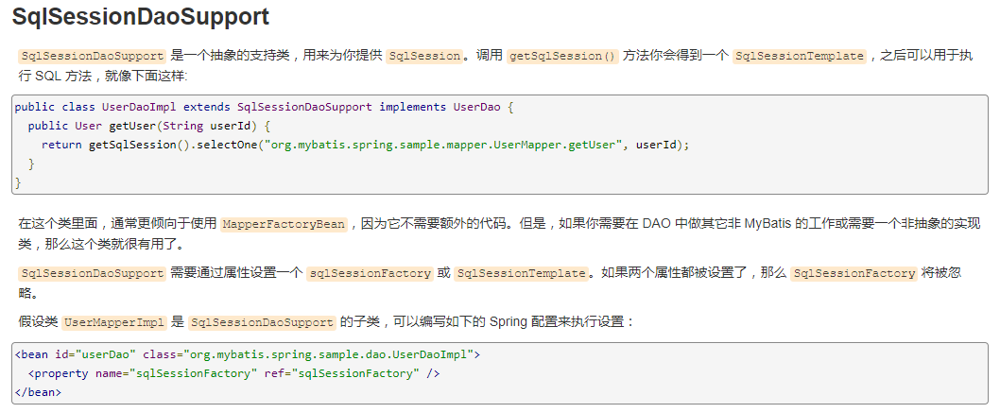
这个方法的不同就是在于，他将SqlSessionTemplate换成了SqlSessionDaoSupport，可以直接通过getSqlsession获得
代码实现
1 2 3 4 5 6 7 8 9 10 11 import org.apache.ibatis.session.SqlSession;import org.mybatis.spring.support.SqlSessionDaoSupport;public class UserMapperImpl2 extends SqlSessionDaoSupport implements UserMapper @Override public List<User> selectUser () return mapper.selectUser();
1 2 3 4 5 6 7 8 9 <bean id ="userMapper" class ="nyist.mapper.UserMapperImpl" > <property name ="sqlSession" ref ="sqlsession" /> </bean > <bean id ="userMapper2" class ="nyist.mapper.UserMapperImpl2" > <property name ="sqlSessionFactory" ref ="sqlSessionFactory" /> </bean >
1 2 3 4 5 6 7 8 9 10 11 12 public class MyTest @Test public void test () throws IOException new ClassPathXmlApplicationContext("spring-dao.xml" );"userMapper2" , UserMapper.class);for (User user : userMapper.selectUser()) {
虽然第二种方法比较简单，但是还是要明白第二种方法实现的底层原理
总结 : 整合到spring中以后可以完全不要mybatis的配置文件，除了这些方式可以实现整合之外，还可以使用注解来实现。
12、声明式事务 12.1 回顾事务
事务在项目开发过程非常重要，涉及到数据的一致性的问题，不容马虎！
事务管理是企业级应用程序开发中必备技术，用来确保数据的完整性和一致性。
事务就是把一系列的动作当成一个独立的工作单元，这些动作要么全部完成，要么全部不起作用。
事务四个属性 ACID
原子性（atomicity）
事务是原子性操作，由一系列动作组成，事务的原子性确保动作要么全部完成，要么完全不起作用
一致性（consistency）
一旦所有事务动作完成，事务就要被提交。数据和资源处于一种满足业务规则的一致性状态中
隔离性（isolation）
可能多个事务会同时处理相同的数据，因此每个事务都应该与其他事务隔离开来，防止数据损坏
持久性（durability）
事务一旦完成，无论系统发生什么错误，结果都不会受到影响。通常情况下，事务的结果被写到持久化存储器中
12.2 测试 将上面的代码拷贝到一个新项目中
在之前的案例中，我们给userDao接口新增两个方法，删除和增加用户；
1 2 3 4 5 public int addUser (User user) public int deleteUser (int id)
mapper文件，我们故意把 deletes 写错，测试！
1 2 3 4 5 6 7 <insert id ="addUser" parameterType ="User" > </insert > <delete id ="deleteUser" parameterType ="int" > </delete >
编写接口的实现类，在实现类中，我们把方法实现
1 2 3 4 5 6 7 8 9 10 11 12 13 14 15 16 17 18 19 @Override public List<User> selectUser () new User(3 , "王二" , "111111" );7 );return mapper.selectUser();@Override public int addUser (User user) return getSqlSession().getMapper(UserMapper.class).addUser(user);@Override public int deleteUser (int id) return getSqlSession().getMapper(UserMapper.class).deleteUser(id);
测试
1 2 3 4 5 6 7 8 9 @Test public void test () new ClassPathXmlApplicationContext("applicationContext.xml" );"userMapper" ,UserMapper.class);for (User user : mapper.selectUser()) {
报错：sql异常，delete写错了
但是结果 ：插入成功！
没有进行事务的管理；我们想让他们都成功才成功，有一个失败，就都失败，我们就应该需要事务！
以前我们都需要自己手动管理事务，十分麻烦！
但是Spring给我们提供了事务管理，我们只需要配置即可；
12.3 Spring中的事务管理 Spring在不同的事务管理API之上定义了一个抽象层，使得开发人员不必了解底层的事务管理API就可以使用Spring的事务管理机制。Spring支持编程式事务管理和声明式的事务管理。
编程式事务管理
将事务管理代码嵌到业务方法中来控制事务的提交和回滚
缺点：必须在每个事务操作业务逻辑中包含额外的事务管理代码
声明式事务管理
一般情况下比编程式事务好用。
将事务管理代码从业务方法中分离出来，以声明的方式来实现事务管理。
将事务管理作为横切关注点，通过aop方法模块化。Spring中通过Spring AOP框架支持声明式事务管理。
使用Spring管理事务，注意头文件的约束导入 : tx
1 2 3 xmlns:tx="http://www.springframework.org/schema/tx"
事务管理器
无论使用Spring的哪种事务管理策略（编程式或者声明式）事务管理器都是必须的。
就是 Spring的核心事务管理抽象，管理封装了一组独立于技术的方法。
JDBC事务
1 2 3 4 <bean id ="transactionManager" class ="org.springframework.jdbc.datasource.DataSourceTransactionManager" > <property name ="dataSource" ref ="datasource" /> </bean >
配置好事务管理器后我们需要去配置事务的通知
1 2 3 4 5 6 7 8 9 10 11 12 13 <tx:advice id ="txAdvice" transaction-manager ="transactionManager" > <tx:attributes > <tx:method name ="add" propagation ="REQUIRED" /> <tx:method name ="delete" propagation ="REQUIRED" /> <tx:method name ="update" propagation ="REQUIRED" /> <tx:method name ="query" read-only ="true" /> <tx:method name ="*" propagation ="REQUIRED" /> </tx:attributes > </tx:advice >
spring事务传播特性：
事务传播行为就是多个事务方法相互调用时，事务如何在这些方法间传播。spring支持7种事务传播行为：
propagation_requierd：如果当前没有事务，就新建一个事务，如果已存在一个事务中，加入到这个事务中，这是最常见的选择。
propagation_supports：支持当前事务，如果没有当前事务，就以非事务方法执行。
propagation_mandatory：使用当前事务，如果没有当前事务，就抛出异常。
propagation_required_new：新建事务，如果当前存在事务，把当前事务挂起。
propagation_not_supported：以非事务方式执行操作，如果当前存在事务，就把当前事务挂起。
propagation_never：以非事务方式执行操作，如果当前事务存在则抛出异常。
propagation_nested：如果当前存在事务，则在嵌套事务内执行。如果当前没有事务，则执行与propagation_required类似的操作
Spring 默认的事务传播行为是 PROPAGATION_REQUIRED，它适合于绝大多数的情况。
假设 ServiveX#methodX() 都工作在事务环境下（即都被 Spring 事务增强了），假设程序中存在如下的调用链：Service1#method1()->Service2#method2()->Service3#method3()，那么这 3 个服务类的 3 个方法通过 Spring 的事务传播机制都工作在同一个事务中。
就好比，我们刚才的几个方法存在调用，所以会被放在一组事务当中！
配置AOP
导入aop的头文件！
1 2 3 4 5 <aop:config > <aop:pointcut id ="txPointCut" expression ="execution(* nyist.mapper.*.*(..))" /> <aop:advisor advice-ref ="txAdvice" pointcut-ref ="txPointCut" /> </aop:config >
进行测试
删掉刚才插入的数据，再次测试！
1 2 3 4 5 6 7 8 9 @Test public void test () new ClassPathXmlApplicationContext("applicationContext.xml" );"userMapper" ,UserMapper.class);for (User user : mapper.selectUser()) {
思考问题？
为什么需要配置事务？
如果不配置，就需要我们手动提交控制事务；
事务在项目开发过程非常重要，涉及到数据的一致性的问题，不容马虎！